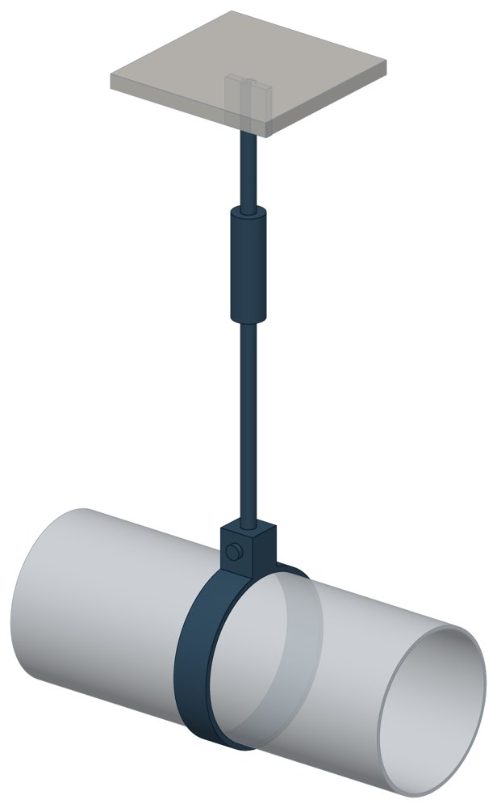

Блоки подвесок хомутовых для горизонтальных трубопроводов ОСТ 34-10-725-93
ОСТ 34-10-725-93. Dн 57–530 мм, допускаемая нагрузка — до 33,3 кН, масса 2–25 кг.

- Диаметр трубы Dн
- 57–530 мм
- Документ
- ОСТ 34-10-725-93
- Исполнений
- 48
- Допускаемая нагрузка
- до 33,3 кН
- Масса
- 2–25 кг
- 3D-модели
- у всех исполнений (условные: общий вид по габаритам)
Таблица исполнений ОСТ 34-10-725-93
| Обозначение | Код ПРОМБУРГ | Dнмм | Допускаемая нагрузкакН | Высота до цента хомутамм | Массакг | 3D |
|---|---|---|---|---|---|---|
| 57У-01 ОСТ 34-10-725-93 | ПБ-34725-0057-1 | 57 | 0,9 | 927 | 2 | 3D |
| 57К-02 ОСТ 34-10-725-93 | ПБ-34725-0057-2 | 57 | 0,9 | 927 | 2 | 3D |
| 76У-03 ОСТ 34-10-725-93 | ПБ-34725-0076-1 | 76 | 1,5 | 937 | 2 | 3D |
| 76К-04 ОСТ 34-10-725-93 | ПБ-34725-0076-2 | 76 | 1,5 | 937 | 2 | 3D |
| 89У-05 ОСТ 34-10-725-93 | ПБ-34725-0089-1 | 89 | 2 | 945 | 2 | 3D |
| 89К-06 ОСТ 34-10-725-93 | ПБ-34725-0089-2 | 89 | 2 | 945 | 2 | 3D |
| 108У-07 ОСТ 34-10-725-93 | ПБ-34725-0108-1 | 108 | 2,9 | 955 | 3 | 3D |
| 108К-08 ОСТ 34-10-725-93 | ПБ-34725-0108-2 | 108 | 2,9 | 955 | 3 | 3D |
| 133У-09 ОСТ 34-10-725-93 | ПБ-34725-0133-1 | 133 | 3,8 | 965 | 3 | 3D |
| 133К-10 ОСТ 34-10-725-93 | ПБ-34725-0133-2 | 133 | 3,8 | 965 | 3 | 3D |
| 159У-11 ОСТ 34-10-725-93 | ПБ-34725-0159-1 | 159 | 5,4 | 1005 | 6 | 3D |
| 159К-12 ОСТ 34-10-725-93 | ПБ-34725-0159-2 | 159 | 5,4 | 1005 | 6 | 3D |
| 219У-13 ОСТ 34-10-725-93 | ПБ-34725-0219-1 | 219 | 11,7 | 1035 | 6 | 3D |
| 219К-14 ОСТ 34-10-725-93 | ПБ-34725-0219-2 | 219 | 11,7 | 1035 | 6 | 3D |
| 273У-15 ОСТ 34-10-725-93 | ПБ-34725-0273-1 | 273 | 18,1 | 1110 | 11 | 3D |
| 273К-16 ОСТ 34-10-725-93 | ПБ-34725-0273-2 | 273 | 18,1 | 1110 | 11 | 3D |
| 325У-17 ОСТ 34-10-725-93 | ПБ-34725-0325-1 | 325 | 23,5 | 1140 | 13 | 3D |
| 325К-18 ОСТ 34-10-725-93 | ПБ-34725-0325-2 | 325 | 23,5 | 1140 | 13 | 3D |
| 377У-19 ОСТ 34-10-725-93 | ПБ-34725-0377-1 | 377 | 28,4 | 1175 | 21 | 3D |
| 377К-20 ОСТ 34-10-725-93 | ПБ-34725-0377-2 | 377 | 28,4 | 1175 | 21 | 3D |
| 426У-21 ОСТ 34-10-725-93 | ПБ-34725-0426-1 | 426 | 33,3 | 1200 | 22 | 3D |
| 426К-22 ОСТ 34-10-725-93 | ПБ-34725-0426-2 | 426 | 33,3 | 1200 | 22 | 3D |
| 530У-23 ОСТ 34-10-725-93 | ПБ-34725-0530-1 | 530 | 33,3 | 1255 | 25 | 3D |
| 530К-24 ОСТ 34-10-725-93 | ПБ-34725-0530-2 | 530 | 33,3 | 1255 | 25 | 3D |
| 57У-25 ОСТ 34-10-725-93 | ПБ-34725-0057-3 | 57 | 0,9 | 1227 | 2 | 3D |
| 57К-26 ОСТ 34-10-725-93 | ПБ-34725-0057-4 | 57 | 0,9 | 1227 | 2 | 3D |
| 76У-27 ОСТ 34-10-725-93 | ПБ-34725-0076-3 | 76 | 1,5 | 1237 | 2 | 3D |
| 76К-27 ОСТ 34-10-725-93 | ПБ-34725-0076-4 | 76 | 1,5 | 1237 | 2 | 3D |
| 89У-29 ОСТ 34-10-725-93 | ПБ-34725-0089-3 | 89 | 2 | 1245 | 2 | 3D |
| 89К-30 ОСТ 34-10-725-93 | ПБ-34725-0089-4 | 89 | 2 | 1245 | 2 | 3D |
| 108У-31 ОСТ 34-10-725-93 | ПБ-34725-0108-3 | 108 | 2,9 | 1255 | 2 | 3D |
| 108К-32 ОСТ 34-10-725-93 | ПБ-34725-0108-4 | 108 | 2,9 | 1255 | 2 | 3D |
| 133У-33 ОСТ 34-10-725-93 | ПБ-34725-0133-3 | 133 | 3,8 | 1265 | 2 | 3D |
| 133К-34 ОСТ 34-10-725-93 | ПБ-34725-0133-4 | 133 | 3,8 | 1265 | 2 | 3D |
| 159У-35 ОСТ 34-10-725-93 | ПБ-34725-0159-3 | 159 | 5,4 | 1300 | 5 | 3D |
| 159К-36 ОСТ 34-10-725-93 | ПБ-34725-0159-4 | 159 | 5,4 | 1300 | 5 | 3D |
| 219У-37 ОСТ 34-10-725-93 | ПБ-34725-0219-3 | 219 | 11,7 | 1330 | 6 | 3D |
| 219К-38 ОСТ 34-10-725-93 | ПБ-34725-0219-4 | 219 | 11,7 | 1330 | 6 | 3D |
| 273У-39 ОСТ 34-10-725-93 | ПБ-34725-0273-3 | 273 | 18,1 | 1400 | 11 | 3D |
| 273К-40 ОСТ 34-10-725-93 | ПБ-34725-0273-4 | 273 | 18,1 | 1400 | 11 | 3D |
| 325У-41 ОСТ 34-10-725-93 | ПБ-34725-0325-3 | 325 | 23,5 | 1430 | 12 | 3D |
| 325К-42 ОСТ 34-10-725-93 | ПБ-34725-0325-4 | 325 | 23,5 | 1430 | 12 | 3D |
| 377У-43 ОСТ 34-10-725-93 | ПБ-34725-0377-3 | 377 | 28,4 | 1465 | 19 | 3D |
| 377К-44 ОСТ 34-10-725-93 | ПБ-34725-0377-4 | 377 | 28,4 | 1465 | 19 | 3D |
| 426У-45 ОСТ 34-10-725-93 | ПБ-34725-0426-3 | 426 | 33,3 | 1490 | 20 | 3D |
| 426К-46 ОСТ 34-10-725-93 | ПБ-34725-0426-4 | 426 | 33,3 | 1490 | 20 | 3D |
| 530У-47 ОСТ 34-10-725-93 | ПБ-34725-0530-3 | 530 | 33,3 | 1545 | 23 | 3D |
| 530К-48 ОСТ 34-10-725-93 | ПБ-34725-0530-4 | 530 | 33,3 | 1545 | 23 | 3D |
Чтобы заказать, сообщите обозначение и код ПРОМБУРГ: +7 (499) 325-51-35, promburg@yandex.ru.
Нормативные документы
- ОСТ 34-10-725-93 Блок подвески хомутовый для горизонтальных трубопроводов. Конструкция и размеры — документ, по которому изготавливается изделие
Связанные позиции
- Соседний тип: ОСТ 34-10-728-93 — Блоки подвесок хомутовых
На трубу Dн 57–530 мм в каталоге
Позиции каталога с исполнениями на те же наружные диаметры трубы.
Детали трубопровода
- Заглушка стальная эллиптическая общих Dн: 12
- Отвод стальной крутоизогнутый 90°, 09Г2С общих Dн: 12
- Отвод стальной крутоизогнутый 90° общих Dн: 12
- Переход стальной концентрический общих Dн: 12
- Фланец стальной воротниковый общих Dн: 12
- Фланец стальной плоский приварной общих Dн: 12
- Днище стальное эллиптическое общих Dн: 2
- Отвод нержавеющий 90° общих Dн: 1
Компенсаторы
- Компенсатор сильфонный 2ОПКР общих Dн: 12
- Компенсатор сильфонный 2ОПКР (ИЯНШ) 2ОПКРИ общих Dн: 12
- Компенсатор сильфонный 2СКУ.М 2СКУМ общих Dн: 12
- Компенсатор сильфонный 2СКУ.М (ИЯНШ) 2СКУМИ общих Dн: 12
- Компенсатор сильфонный 2СКУ.ППМ (ИЯНШ) 2СКУППМИ общих Dн: 12
- Компенсатор сильфонный 2СКУ.ППУ (ИЯНШ) 2СКУППУИ общих Dн: 12
- Компенсатор сильфонный 2СКУ.ППУ/ОЦ (ИЯНШ) 2СКУППУОЦИ общих Dн: 12
- Компенсатор сильфонный КС общих Dн: 12
- Компенсатор сильфонный КСО общих Dн: 12
- Компенсатор сильфонный КСО (ИЯНШ) КСОИ общих Dн: 12
- Компенсатор сильфонный КСОФ общих Dн: 12
- Компенсатор сильфонный ОПКР общих Dн: 12
- Компенсатор сильфонный ОПКР (ИЯНШ) ОПКРИ общих Dн: 12
- Компенсатор сильфонный сейсмический общих Dн: 12
И ещё 21 тип — в оглавлении каталога.
Другие опоры и подвески
- Опора неподвижная двухупорная ТС-660 общих Dн: 12
- Опорные плиты диэлектрические ТС-632 общих Dн: 12
- Опоры бескорпусные неподвижные ОБН общих Dн: 12
- Опоры приварные неподвижные скользящие ОПН общих Dн: 12
- Опоры сварные скользящие неподвижные и направляющие СТО 79814898-130 общих Dн: 12
- Опоры хомутовые и скользящие неподвижные и направляющие СТО 79814898-131 общих Dн: 12
- Подвески ПГ и ПМ для горизонтальных трубопроводов ПГ, ПМ общих Dн: 12
- Опоры подвесного типа ПГВ, ПМВ общих Dн: 12
- Опора приварная скользящая и неподвижная ОСТ 34-10-616-93 общих Dн: 12
- Опоры хомутовые скользящие ОСТ 34-10-617-93 общих Dн: 12
И ещё 97 типов — в оглавлении каталога.
Другие типы раздела
Подвески и блоки трубопроводов ТЭС и АЭС (ОСТ 34-10-724…745-93)
- Блоки подвесок приварных ОСТ 34-10-724-93
- Блок подвески с опорной балкой ОСТ 34-10-726-93
- Блоки подвесок приварных для вертикальных трубопроводов ОСТ 34-10-727-93
- Блоки подвесок хомутовых ОСТ 34-10-728-93
- Блок подвески с проушиной ОСТ 34-10-729-93
- Блоки подвески с серьгой ОСТ 34-10-730-93
- Блоки подвески с плавником ОСТ 34-10-731-93
- Блок подвески с траверсой ОСТ 34-10-732-93
- Хомуты для горизонтальных трубопроводов ОСТ 34-10-735-93
- Хомуты для вертикальных трубопроводов ОСТ 34-10-736-93
- Балки опорные ОСТ 34-10-737-93
- Тяги резьбовые с муфтами ОСТ 34-10-739-93
- Блоки крепления подвески ОСТ 34-10-740-93
- Тяги шарнирные ОСТ 34-10-742-93
- Блоки пружинные ОСТ 34-10-743-93
- Блоки пружинные сдвоенные ОСТ 34-10-744-93
- Блоки пружинные опорные ОСТ 34-10-745-93
Частые вопросы
По какому диаметру подбирать — Dн или Ду?
По наружному диаметру трубы Dн: именно он стоит в таблицах серии. Ду — условный проход, округлённая величина: Ду 100 соответствует Dн 108. В заявке указывайте Dн и толщину стенки трубы.
В старом проекте нагрузка в тс, а здесь в кН. Как сравнить?
Серия 4.903-10 даёт нагрузки в тонна-силах, серия 5.903-13 — в килоньютонах. 1 тс = 9,81 кН, то есть 10 тс — это около 98 кН. В таблицах каталога переключатель единиц пересчитывает значения.
Из какой стали изготавливаются опоры?
По рабочим чертежам серии листовые детали — Ст3сп5 ГОСТ 14637-89, хомуты из круга — сталь 20 ГОСТ 1050-88. Для районов с низкой расчётной температурой воздуха применяется низколегированная сталь, в том числе 09Г2С; размеры опор при этом не меняются. В заявке укажите расчётную температуру наружного воздуха.
Почему часть поверхностей опоры не окрашена?
Поверхности под приварку к трубе и к несущей конструкции оставляют без краски, иначе шов получится некачественным. Их консервируют смазкой, которую снимают перед сваркой.
Что указать в заявке, чтобы получить цену без уточнений?
Обозначение с номером исполнения или код ПБ, количество, Dн и стенку трубы, расчётную температуру наружного воздуха, покрытие, город доставки и желаемый срок. Кнопка «В заявку» в таблице собирает спецификацию, которую можно выгрузить в Excel или отправить письмом.